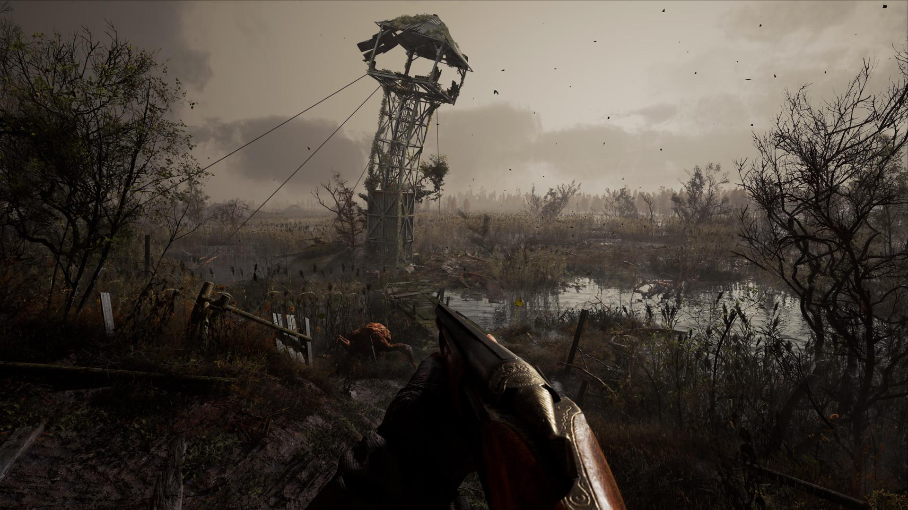
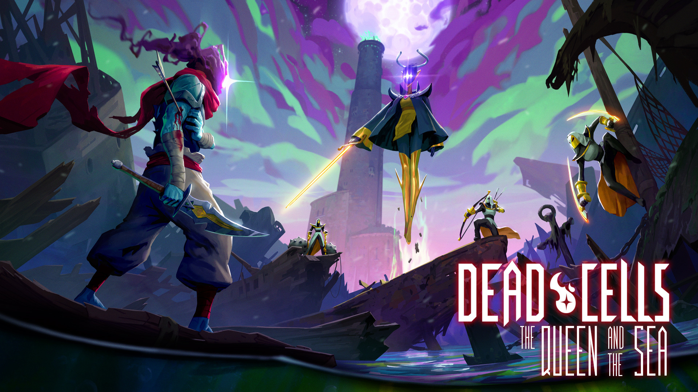
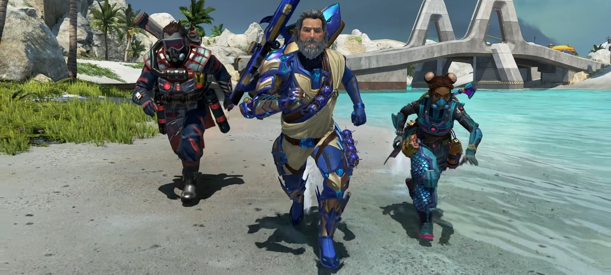

НОВОСТИ

09-01-2022
Выход S.T.A.L.K.E.R. 2 задержат
Выход игры S.T.A.L.K.E.R. 2 задержат до осени 2022 года. О переносе релиза сообщил популярный украиноязычный блогер OLDboi в ролике на YouTube.
По информации автора видео, о таком решении студии GSC Game World он узнал от источника. OLDboi уточнил, что украинские разработчики не спешат сообщать геймерам о переносе в связи с желанием собрать больше предзаказов.
Он добавил, что в GSC Game World официально сообщат о переносе выхода игры до начала весны или первого показа геймплея. По мнению блогера, полноценный выход S.T.A.L.K.E.R. 2 состоится осенью 2022 года.

10-01-2022
Новый анимационный трейлер Dead Cells по случаю релиза DLC «Queen and the Sea»
Сегодня разработчик Motion Twin в сотрудничестве со студией Evil Empire выпустили анимационный видеоролик метроидвании Dead Cells в честь выхода платного DLC «Queen and the Sea», которое позволит фанатам насладиться новым контентом и концовкой.
В этом дополнении все начнется с разрушенного монстрами остова древнего корабля, затем игрокам предстоит подниматься наверх внутри маяка параллельно сражаясь с тремя чудовищно сильными воинами и стараясь не поджариться на огне, который будет постепенно подниматься снизу, а напоследок их ждет эпичная схватка со старым другом героя.

10-01-2022
В Apex Legends пройдет событие "Темные глубины" с новой картой для "Арен"
EA и Respawn Entertainment анонсировали очередное временное событие для Apex Legends, которое получило название "Темные глубины". Ивент пройдет с 11 января по 1 февраля и привнесет в игру массу новой косметики, различные флэш-события и новую карту для "Арен".
Новая карта называется "Среда обитания" — это один из островов архипелага Новая Антиллия. Здесь размножались левиафаны, а позднее остров превратили в этологический центр для изучения повадок этих животных.